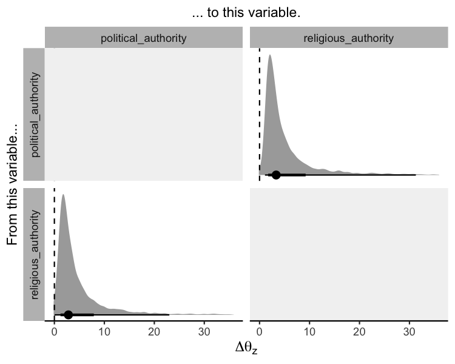
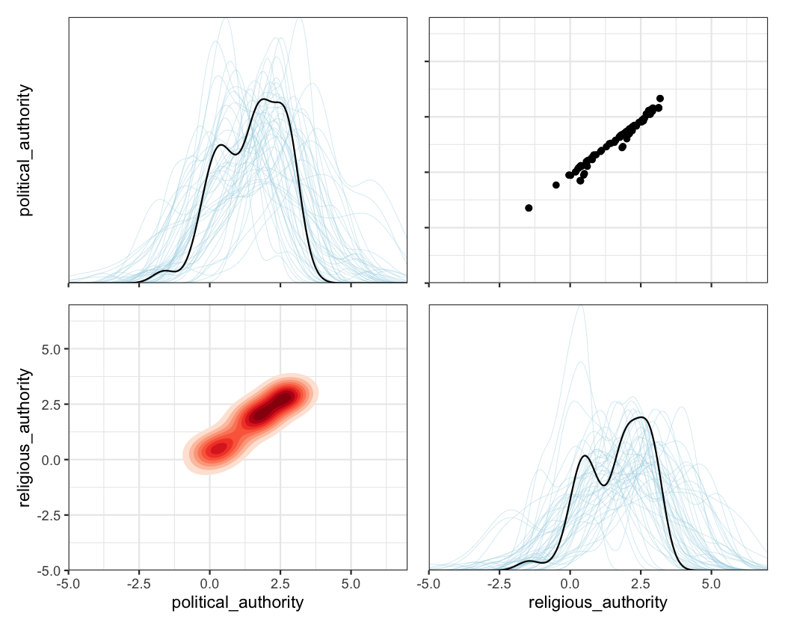
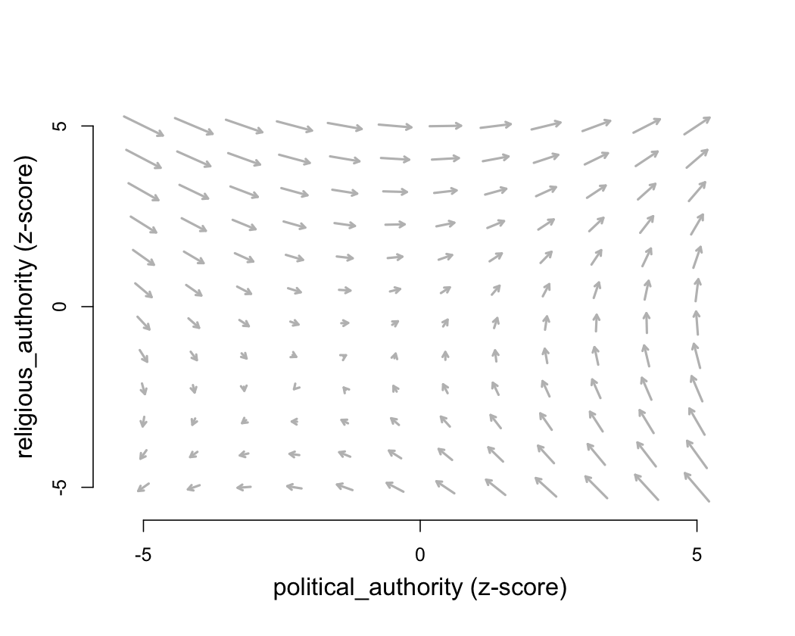
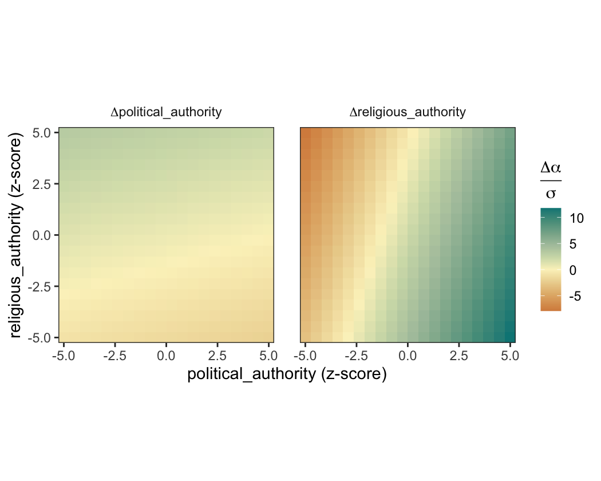
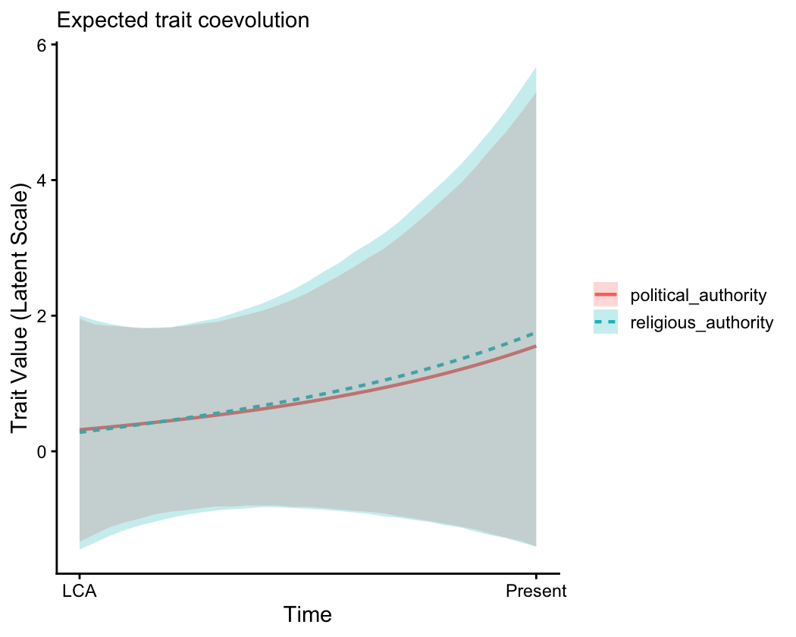
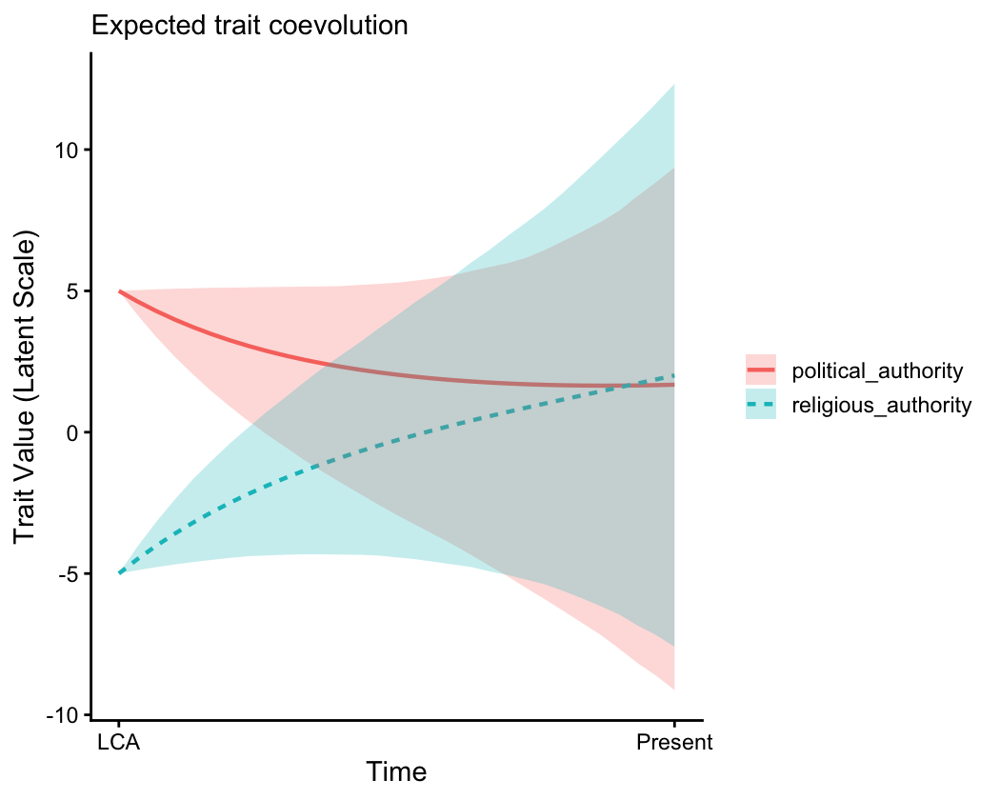

vignettes/coevolve.Rmd
coevolve.RmdThis vignette provides an introduction to the coevolve package. It briefly describes the class of generalized dynamic phylogenetic models (GDPMs) that the package is designed to fit. It then runs through a working example to showcase different features of the package.
In the coevolve package, the main function is
coev_fit(), which fits a generalized dynamic phylogenetic
model to traits given the phylogenetic relationships among taxa. The
model allows the user to determine whether evolutionary change in one
trait precedes evolutionary change in another trait.
Under the hood, the package estimates the parameters of the following stochastic differential equation along the branches of a phylogenetic tree. The equation partitions evolutionary change in the traits into state-dependent deterministic selection and state-independent Brownian motion, similar to a multivariate Ornstein-Uhlenbeck process:
\[ d\pmb{\eta}(t) = (\textbf{A}\pmb{\eta}(t) + \textbf{b}) + \textbf{G}dW(t) \]
\(\pmb{\eta}(t)\) is a vector of latent variables at time \(t\). The matrix \(\textbf{A}\) represents “selection” with strictly negative autoregressive terms on the diagonal. Off-diagonals may be positive or negative, controlling the effect of each trait on the others (e.g., \(\textbf{A}[2,1]\) represents the effect of \(\eta_1\) on \(\eta_2\)). \(\textbf{b}\) is a vector of continuous time intercepts. The matrix \(\textbf{G}\) is the Cholesky decomposition of the positive semi-definite “drift” covariance matrix \(\textbf{Q}\) which scales the Brownian motion process \(W(t)\).
The following observation-level measurement model then links \(\pmb{\eta}\) to the observations at the tips of the tree:
\[ y_{[n,j]} \sim f(\mu_{[n,j]}, {\phi}_{[j]}) \\ g(\mu_{[n,j]}) = \pmb{\eta}_{[n]} \]
\(y_{[n,j]}\) denotes the observed value for trait \(j\) from species or population \(n\) at the tips of a phylogeny. \(f()\) is a probability density or mass function with expected value \(\mu\) and additional distributional parameters \(\pmb{\phi}\). \(g()\) denotes a link function, which transforms the expected value from the support of the function \(f()\) latent values to the unbounded continuous space of the evolutionary process.
Similar dynamic coevolutionary models are offered in programs like BayesTraits (see here). However, these models are limited to a small number of discrete traits. The coevolve package goes beyond these models by allowing the user to estimate coevolutionary effects between any number of variables and a much wider range of response distributions, including continuous, binary, ordinal, and count distributions.
For more information about the model, refer to the introductory methods paper here.
To show the model in action, we will use data on political and religious authority among 97 Austronesian societies. Political and religious authority are both four-level ordinal variables representing whether each type of authority is absent (not present above the household level), sublocal (incorporating a group larger than the household but smaller than the local community), local (incorporating the local community) and supralocal (incorporating more than one local community). These data were compiled by Sheehan et al. (2023).
language political_authority religious_authority
1 Aiwoo Sublocal Sublocal
2 Alune Supralocal Supralocal
3 AnejomAneityum Supralocal Supralocal
4 Anuta Local Local
5 Atoni Supralocal Supralocal
6 Baree Local LocalEach society is on a separate row and is linked to a different
Austronesian language. These languages can be represented on a
linguistic phylogeny (see authority$phylogeny). We are
interested in using this phylogeny to understand how political and
religious authority have coevolved over the course of Austronesian
cultural evolution.
To fit the generalized dynamic phylogenetic model, we use the
coev_fit() function. Internally, this function builds the
Stan code, builds a data list, and then compiles and fits the model
using the cmdstanr package.
Users can run these steps one-by-one using the
coev_make_stancode() and coev_make_standata()
functions, but for brevity we just use the coev_fit()
function.
fit <-
coev_fit(
data = authority$data,
variables = list(
political_authority = "ordered_logistic",
religious_authority = "ordered_logistic"
),
id = "language",
tree = authority$phylogeny,
# set manual prior
prior = list(A_offdiag = "normal(0, 2)"),
# additional arguments for cmdstanr
parallel_chains = 4,
iter_sampling = 2000,
iter_warmup = 2000,
refresh = 0,
seed = 1
)Running MCMC with 4 parallel chains...
Chain 3 finished in 514.0 seconds.
Chain 4 finished in 632.3 seconds.
Chain 1 finished in 686.1 seconds.
Chain 2 finished in 717.0 seconds.
All 4 chains finished successfully.
Mean chain execution time: 637.4 seconds.
Total execution time: 717.1 seconds.The function takes several arguments, including a dataset, a named
list of variables that we would like to coevolve in the model (along
with their associated response distributions), the column in the dataset
that links to the phylogeny tip labels, and a phylogeny of class
phylo. The function sets priors for the parameters by
default, but it is possible for the user to manually set these priors
(see the vignette on setting priors for more
details). The user can also pass additional arguments to cmdstanr’s
sample() method which runs under the hood.
Once the model has fitted, we can print a summary of the parameters.
summary(fit)Variables: political_authority = ordered_logistic
religious_authority = ordered_logistic
Data: authority$data (Number of observations: 97)
Phylogeny: authority$phylogeny (Number of trees: 1)
Draws: 4 chains, each with iter = 2000; warmup = 2000; thin = 1
total post-warmup draws = 8000
Autoregressive selection effects:
Estimate Est.Error 2.5% 97.5% Rhat Bulk_ESS
political_authority -0.65 0.52 -1.95 -0.03 1.00 4343
religious_authority -0.79 0.59 -2.15 -0.03 1.00 5225
Tail_ESS
political_authority 4203
religious_authority 3876
Cross selection effects:
Estimate Est.Error 2.5%
political_authority ⟶ religious_authority 2.33 0.98 0.44
religious_authority ⟶ political_authority 1.74 1.09 -0.32
97.5% Rhat Bulk_ESS Tail_ESS
political_authority ⟶ religious_authority 4.29 1.00 3328 3594
religious_authority ⟶ political_authority 3.91 1.00 2109 4686
Drift parameters:
Estimate Est.Error 2.5%
sd(political_authority) 1.98 0.84 0.21
sd(religious_authority) 1.25 0.79 0.06
cor(political_authority,religious_authority) 0.25 0.31 -0.42
97.5% Rhat Bulk_ESS
sd(political_authority) 3.54 1.00 1272
sd(religious_authority) 2.92 1.00 1640
cor(political_authority,religious_authority) 0.77 1.00 4837
Tail_ESS
sd(political_authority) 1261
sd(religious_authority) 3283
cor(political_authority,religious_authority) 5973
Continuous time intercept parameters:
Estimate Est.Error 2.5% 97.5% Rhat Bulk_ESS
political_authority 0.21 0.94 -1.64 2.01 1.00 8830
religious_authority 0.29 0.93 -1.54 2.11 1.00 10528
Tail_ESS
political_authority 5761
religious_authority 5870
Ordinal cutpoint parameters:
Estimate Est.Error 2.5% 97.5% Rhat Bulk_ESS
political_authority[1] -1.32 0.88 -3.04 0.45 1.00 5327
political_authority[2] -0.56 0.85 -2.23 1.14 1.00 6127
political_authority[3] 1.63 0.88 -0.03 3.44 1.00 7270
religious_authority[1] -1.50 0.92 -3.26 0.33 1.00 6697
religious_authority[2] -0.82 0.90 -2.53 1.00 1.00 6992
religious_authority[3] 1.63 0.93 -0.11 3.51 1.00 7742
Tail_ESS
political_authority[1] 4841
political_authority[2] 5424
political_authority[3] 5857
religious_authority[1] 5991
religious_authority[2] 6041
religious_authority[3] 6728Warning: There were 14 divergent transitions after warmup.
http://mc-stan.org/misc/warnings.html#divergent-transitions-after-warmupWe can see a printed summary of the model parameters, including the autoregressive effects (i.e., the effects of variables on themselves in the future), the cross effects (i.e., the effects of variables on the other variables in the future), the amount of drift, correlated drift, the continuous time intercepts for the stochastic differential equation, and the ordinal cutpoints for both variables.
While the summary output is useful, it is difficult to interpret the parameters directly to make inferences about coevolutionary patterns. An alternative approach is to directly “intervene” in the system. By doing this, we can better understand how increases or decreases in a variable change the equilibrium trait values of other variables in the system. For example, we can hold one variable at its average value and then increase it by a standardised amount to see how the equilibrium value for the other trait changes.
The function coev_calculate_delta_theta() allows the
user to calculate \(\Delta\theta_{z}\),
which is defined as the change in the equilibrium trait value for one
variable which results from a median absolute deviation increase in
another variable. This function returns a posterior distribution. We can
easily visualise the posterior distributions for all cross effects at
once using the function coev_plot_delta_theta().
coev_plot_delta_theta(fit, prob_outer = 0.90)
This plot shows the posterior distribution, the posterior median, and the 66% and 90% credible intervals for \(\Delta\theta_{z}\). We can conclude that political and religious authority both influence each other in their evolution. A one median absolute deviation increase in political authority results in an increase in the equilibrium trait value for religious authority, and vice versa. In other words, these two variables coevolve reciprocally over time.
There are several ways to visualise this runaway coevolutionary
process: (1) a flow field of evolutionary change, (2) a selection
gradient plot, and (3) a time series simulation of evolutionary
dynamics. In order to make these various plots more understandable, it
is useful to first plot where the different taxa are situated in latent
trait space. We can do this using the
coev_plot_trait_values() function, which produces a pairs
plot of estimated trait values for all the variables in the model (along
with associated posterior uncertainty on the diagonal).
coev_plot_trait_values(fit, xlim = c(-5, 7), ylim = c(-5, 7))
Now that we have a good sense of the trait space, we can plot a flow
field of evolutionary change. The coev_plot_flowfield()
function plots the strength and direction of evolutionary change at
different locations in trait space.
coev_plot_flowfield(
object = fit,
var1 = "political_authority",
var2 = "religious_authority",
limits = c(-5, 5)
)
The arrows in this plot tend to point towards the upper right-hand corner, suggesting that political and religious authority evolve towards higher levels in a runaway coevolutionary process.
We can also visualise the coevolutionary dynamics with a selection
gradient plot. The function coev_plot_selection_gradient()
produces a heatmap which shows how selection acts on both variables at
different locations in trait space, with green indicating positive
selection and red indicating negative selection.
coev_plot_selection_gradient(
object = fit,
var1 = "political_authority",
var2 = "religious_authority",
limits = c(-5, 5)
)
We can see from this plot that as each variable increases, the selection on the other variable increases.
Finally, we can “replay the past” by simulating these coevolutionary
dynamics over a time series. By default, the
coev_plot_pred_series() function uses the model-implied
ancestral states at the root of the phylogeny as starting points, and
allows the variables to coevolve over time. Shaded areas represent 95%
credible intervals for the predictions.

It is also possible to initialise the variables at different starting points, to see the implied coevolutionary dynamics. For example, we can imagine a case where the ancestral society had high levels of political authority but low levels of religious authority.
coev_plot_pred_series(
object = fit,
eta_anc = list(
political_authority = 5,
religious_authority = -5
)
)
In the above example, both variables were ordinal. As such, we declared both of them to follow the “ordered_logistic” response distribution. But the coevolve package supports several more response distributions.
| Response distribution | Data type | Link function |
|---|---|---|
| bernoulli_logit | Binary | Logit |
| ordered_logistic | Ordinal | Logit |
| poisson_softplus | Count | Softplus |
| negative_binomial_softplus | Count | Softplus |
| normal | Continuous real | - |
| gamma_log | Positive real | Log |
Different variables need not follow the same response distribution. This can be useful when users would like to assess the coevolution between variables of different types.
We hope that this package is a useful addition to the phylogenetic comparative methods toolkit. If you have any questions about the package, please feel free to email Scott Claessens (scott.claessens@gmail.com) or Erik Ringen (erikjacob.ringen@uzh.ch) or raise an issue over on GitHub: https://github.com/ScottClaessens/coevolve/issues